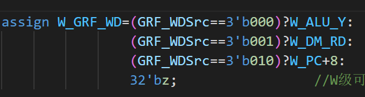
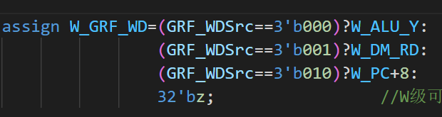
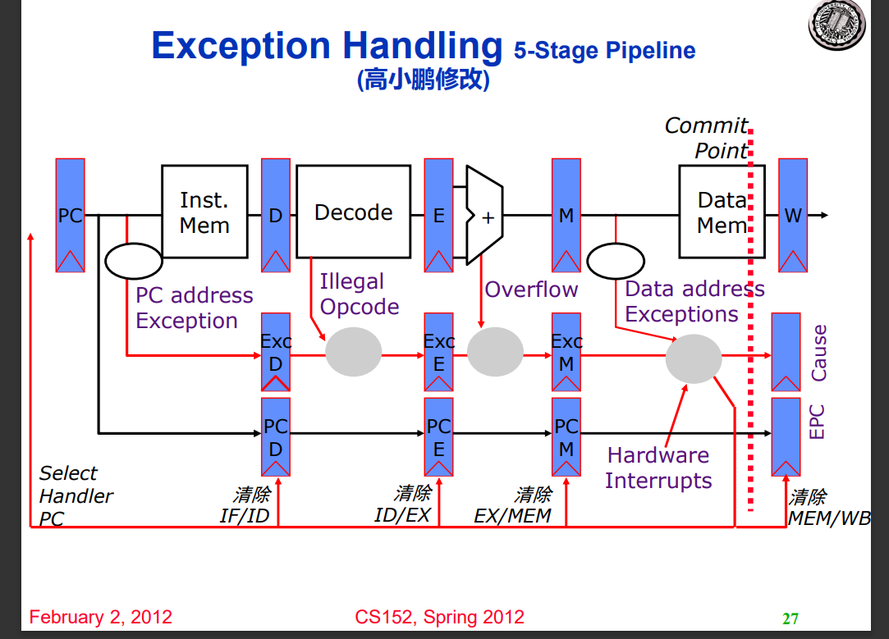
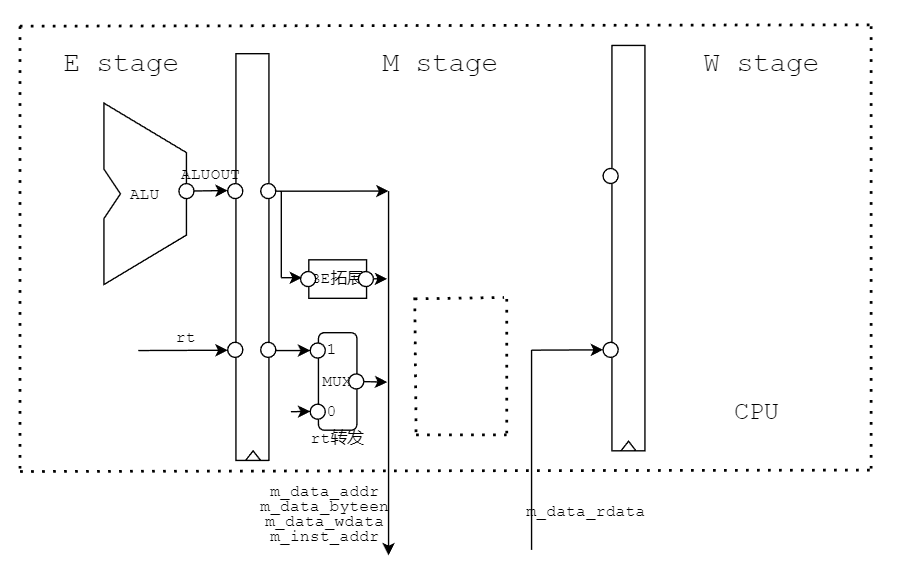

P7设计文档
5级流水线CPU设计文档+中断支持
支持指令
R, add, sub, And, Or, Xor, slt, sltu
addi, andi, xori, ori, lui
lb, lh, lw, sb, sh, sw, lbu, lhu
mult, multu, div, divu, mfhi, mflo, mthi, mtlo
beq, bne, j, jal, jr, bltzal
nop, eret, mtc0, mfc0, syscall
流程模块设计

CP0
- 处理来自CPU的内部异常以及来自中断发生器与timer的外部中断，产生异常控制信号给CPU
- 放置在M级，接收CPU在M级的mtc0,mfc0,eret指令
- 其中包含三个寄存器SR、Cause、EPC，SR为中断异常使能控制，Cause为异常中断情况，EPC为异常处理结束后需要返回的PC
- 具体SR、Cause的特定位如下宏定义所示，后续控制逻辑由其产生
`define IM SR[15:10] //Interrupt Mask 由mtc0修改，屏蔽中断 |
通过EXL和ExcCodeIn判断有无异常产生，通过EXL和IE，以及每一位有没有既有中断使能，又有中断信号判断有无中断产生。
注意产生异常或中断时指令在延迟槽，返回PC应为到上一条跳转指令的PC，需要从D级一直流水BDIn信号，tmp_EPC = Req?(BDIn?VPC-4:VPC):EPC
其中VPC为M级PC，即在外界观察到的宏观PC
写寄存器只可写SR以及EPC，判断写入地址是否是12或14并且有写使能
读寄存器可以直接读，根据地址12 13 14读三个寄存器
端口
| Port name | Direction | Type | Description |
|---|---|---|---|
| clk | input | ||
| reset | input | ||
| en | input | 写使能信号 (mtc0) | |
| CP0Add | input | [4:0] | 读写寄存器的编号 |
| CP0In | input | [31:0] | CP0写入数据 |
| CP0Out | output | [31:0] | CP0读出数据 |
| VPC | input | [31:0] | 受害PC |
| BDIn | input | 是否是延迟槽指令 | |
| EPCOUt | output | [31:0] | EPC的值 |
| EXLClr | input | 用来复位EXL（M级指令是eret，即退出异常） | |
| ExcCodeIn | input | [4:0] | 记录异常类型 |
| HWInt | input | [5:0] | 输入6个设备中断信号 |
| Req | output | 进入处理程序请求（有异常或中断） |
系统桥
- 对CPU向外设写入的数据进行分流，对外设向CPU写入的数据进行选择。

- CPU从外设读：根据地址用MUX筛选；CPU向外设写：写地址、数据直接全部发送，写使能用byteen以及写地址决定决定
- 修改层级结构，在最高层通过系统桥将CPU与外置DM,TC0,TC1,以及中断生成器相连
- 注意传给DM的按位读写使能要再读写其他外设时置为0
- 端口：
| Port name | Direction | Type | Description |
|---|---|---|---|
| CPUAddr | input | [31:0] | CPU读写地址 |
| CPUWD | input | [31:0] | CPU往外设写数据 |
| CPUbyteen | input | [3:0] | 按位读写使能 |
| TC0Write | output | 写TC0 | |
| TC1Write | output | 写TC1 | |
| DEV_Addr | output | [31:0] | 往外设写入的地址 |
| DEV_WD | output | [31:0] | 往外设写入的数据 |
| temp_m_data_byteen | output | [3:0] | 传给DM的按位读写使能 |
| DMRD | input | [31:0] | 三个外设写入CPU的数据 |
| TC0RD | input | [31:0] | |
| TC1RD | input | [31:0] | |
| CPURD | output | [31:0] | 最后决定写入CPU的数据 |
TC
包含三个32位寄存器，ctrl, preset, count
ctrl[3]表示中断屏蔽（1允许中断），[2:1]为模式选择，[0]为计数器使能
四个状态的状态机，在INT状态下，如果中断没有屏蔽，则向外发送中断信号
- idle状态下，如果计数器使能为1则转至load状态
- load状态下，加载初始值之后转至cnt状态
- cnt状态下，如计数器使能为1则开始倒计数，cnt==0之后产生一周期终端信号，状态变为interrupt；如果计数器使能为0，则回到idle
- interrupt状态下，如果在模式0，计数到0时计数器使能变0；如果在模式1，计数为0时中断变0。之后回到idle，等待计数器使能变1往复
端口
| Port name | Direction | Type | Description |
|---|---|---|---|
| clk | input | ||
| reset | input | ||
| Addr | input | [31:2] | |
| WE | input | ||
| Din | input | [31:0] | |
| Dout | output | [31:0] | |
| IRQ | output |
内部异常设计
所有异常级别低于中断级别，并均低于Reset
每一级的异常流水需要遵循距离M级远的优先级更高，即在上一级有异常时，按上一级往后传；没有异常时，再判断当前阶段有无异常。
F级有F_Exc_AdEL，取指令异常，即取地址低位没有对齐或者超出地址存储区域。注意在有eret信号时，直接跳转到中断处理程序，不产生异常。
D级D_Exc_RI，即未知指令与D_Exc_syscall，即syscall指令，从CU增加两个控制信号即可。
E级有E_Exc_AriOv，即计算指令溢出。同时还可产生E_Exc_DMOv，即地址指令溢出，但需要注意该异常需要在M级才真正出现，E级只是提前计算，访存指令还未执行，需要跳过E级异常流水，直接传给M级再加入异常流水判断。
M级有M_Exc_AdES与M_Exc_AdEL，即写入地址错误与读出地址错误。注意除了地址不对齐、超出范围之外，还有M级的地址运算溢出，以及不可用lb,lh读写timer中三个寄存器和不可写timer中count寄存器的要求。
最后传至CP0的即M级的ExcCode
CU模块设计
- 相较P4，省去RegWrite信号，直接译出当前指令需要写入的地址，如不需写入，默认写至0，在写入GRF时直接略去
- 直接译出当前指令rs, rt, rd, shamt, imm16, imm26以及所有控制信号供每个阶段选取使用，还需译出Tuse_rs/rt以及E_Tnew与M_Tnew，各级输出对应信号至Conflict模块
- 将指令分类，分为：cal_r,cal_i,md,mt,mf,load,save,branch,branch_ucl,branch_cl,shift,jreg,jadd,jlink（ori被归为cal_i）
- 增加四个指令，增加GRF写入数据来源、写入地址的选择
- 增加ALUDM、ALUAri输出端口，表示当前使用ALU计算的指令是地址访存指令还是计算指令
assign cal_r=(add||sub||And||Or||Xor||slt||sltu); |
- 控制信号新增：MDU, MDUStart, MDUSelect, MFSelect, ByteSelect, DESelect
- 控制信号调整：GRF_WA, GRF_WDSrc, ALUSelect, EXTSelect（cal_i各个指令行为不同，注意对照指令集）,BranchSelect
| Port name | Direction | Type | Description |
|---|---|---|---|
| Ins | input | [31:0] | 当级指令 |
| branchTrue | input | 分支控制信号 | |
| 控制信号 | |||
| GRF_WA | output | [4:0] | 写入的地址 |
| GRF_WDSrc | output | [2:0] | 写入数据选择 |
| EXTSelect | output | EXT位拓展类型选择 | |
| ALUSrc | output | ALU_B的数据源选择 | |
| ALUSelect | output | [3:0] | ALU运算类型选择 |
| MDU | output | 乘除运算+读写HI LO信号（需要阻塞） | |
| MDUStart | output | 乘除运算开始信号 | |
| MDUSelect | output | [2:0] | 乘除运算+写HI LO功能选择 |
| MFSelect | output | [1:0] | 读HI LO功能选择 |
| MemWrite | output | 内存写入控制 | |
| BranchSelect | output | [3:0] | branch判断类型选择 |
| NPCSelect | output | [2:0] | NPC类型选择 |
| ByteSelect | output | [1:0] | 访存数据类型选择 |
| DESelect | output | [2:0] | 读取内存后结果拓展类型 |
| 指令译码 | |||
| opcode | output | [5:0] | |
| funct | output | [5:0] | |
| rs | output | [4:0] | |
| rt | output | [4:0] | |
| rd | output | [4:0] | |
| shamt | output | [4:0] | |
| imm16 | output | [15:0] | |
| imm26 | output | [25:0] | |
| T计算 | |||
| Tuse_rs | output | [1:0] | |
| Tuse_rt | output | [1:0] | |
| E_Tnew | output | [1:0] | |
| M_Tnew | output | [1:0] |
T计算表格
- 注意新增的乘除指令的AT
| Ins | Tuse_rs | Tuse_rt | E_Tnew | M_Tnew |
|---|---|---|---|---|
| cal_r | 1 | 1 | 1 | |
| cal_i | 1 | 1 | ||
| md | 1 | 1 | ||
| mt | 1 | |||
| mf | 1 | |||
| load | 2 | 2 | 1 | |
| save | 1 | 2 | ||
| branch | 0 | 0 | ||
| jreg | 0 |
Conflit模块设计：AT控制阻塞，直接转发
阻塞
- D级判断将要使用的寄存器数据是否能得到转发更新，即后续写入相同寄存器的Tnew是否有大于Tuse的，如果有则需要阻塞，以在后续能得到转发更新。特判0号寄存器不需要阻塞，能够直接获得数据0
- 需要得到D级指令rs, rt的Tuse，以及后续E, M级指令的Tnew，在各级CU中计算，发送至冲突单元（W级Tnew全是0不需要考虑，都可以内部转发解决）
- 阻塞时需要暂停更新PC以及F级读出的指令，并且清空D级当前指令的译码输出，以替换为nop空泡
- P6新增乘除Stall，在乘除运算即将开始或正在进行时如遇到乘除指令需要Stall
- P7新增eret的Stall，eret与mtc0的写后读冲突，需要单独判断阻塞，判断方法为当D级为eret即将读CP0的EPC时，EM级如果有mtc0即将写入CP0的EPC，即rd为14时，阻塞。

转发
阻塞后，所有指令在需要读寄存器数据的时候都能够获得后续计算完毕的数据，每级转发出已算出的数据，发送给之前各级即可。
需要读寄存器：D级GRF，Branch计算需要rs, rt数据；E级ALU需要rs,rt 数据；M级DM写入数据口需要rt数据
需要写寄存器：E级可转发出D级算的PC+8；M级可转发出D级算的PC+8和E级算的的ALU_Y；W级可转发出D级算的PC+8，E级算的的ALU_Y和M级读出的DM数据。根据当前指令CU译码得到的GRF_WDSrc进行选择。此外还有W级寄存器写入，可直接内部转发至D级读出

 


- 在主模块中，获取各级需要读的寄存器编号（D_rs,D_rt,E_rs,E_rt,M_rt），寄存器原读数（D_rs_data,D_rt_data,E_rs_data,E_rt_data,M_rt_data），写入的寄存器编号（E_GRF_WA,M_GRF_WA,W_GRF_WA）和数据（E_GRF_WD,M_GRF_WD,W_GRF_WD）
- 比较读的编号和写的编号是否有相等的，如有相等的则代表有数据已经更新需要转发，转发优先级为更新次序，最后一次更新优先转发，即优先转发距离需要数据的阶段近的数据，特判如果需要读0号寄存器的数据，直接转发0
- 转发的数据（D_rs_fw,D_rt_fw,E_rs_fw,E_rt_fw,M_rt_fw）发送至各级需要的部分运算，并传递给下一级
五级模块设计
每个阶段之间以寄存器隔开，寄存器设计在每个模块输出处，使用reg类型
每个阶段之间需要流水传递Ins，PC，传给各级CU以译码出当前阶段的rs，rt以及需要写入的地址和写入数据的选择
部分阶段前后间需要传递需要使用的NPC, EXTout, ALU_Y, DM_RD
P7新增：各级传出ExcCode并流水传递以及DS（指令是否在延迟槽中）；CU需在D和M级多译出rd，为对CP0的读写提供阻塞条件与地址
P6更新乘除槽与储存器外置以及按字节访存
- 删去F_IFU与M_DM，添加M_DE与E_MDU
- 乘除槽有两个寄存器，其中数据需要在EMW级流水，以便进行转发，并且需要添加转发信号控制
- 外置储存器需要修改数据通路，前寄存器发送写入数据，后寄存器接收读出数据
P7宏观PC
在外界的视角，仅需知道当前周期的情况，外界通过给出中断与CPU沟通，中断处理器位于M级，所以M级表现在外，宏观PC为M级PC
为了保证做出单周期的表现，需要在出现异常中断时，所有流水寄存器统一做出跳转到4180中断处理程序的形态，并停止流水线中所有正在执行的指令的行为
1. Fetch
- 包含FDReg
- Fetch
| Port name | Direction | Type | Description |
|---|---|---|---|
| clk | input | ||
| reset | input | ||
| F_Flush | input | 清空延迟槽信号 | |
| F_Stall | input | 阻塞更新PC | |
| NPC | input | [31:0] | D级NPC计算出的NPC传入 |
| F_PC | output | reg [31:0] | <=NPC，传出至外部指令储存器 |
| F_Ins | input | [31:0] | 需要从外部指令储存器读入Ins |
| FD寄存器 | |||
| D_Stall | input | 阻塞更新FD间寄存器 | |
| D_Flush | input | 清除延迟槽信号 | |
| D_PC | output | reg [31:0] | <=F_PC |
| D_Ins | output | reg [31:0] | <=F_Ins |
- F级与指令储存的数据交换
2. Decode
- 包括D_CU, EXT, NPC (Branch), DEReg
| Port name | Direction | Type | Description |
|---|---|---|---|
| clk | input | ||
| reset | input | ||
| D_PC | input | [31:0] | PC流水 |
| D_Ins | input | [31:0] | 指令流水 |
| Conflict/Forward | |||
| Tuse_rs | output | [1:0] | AT算阻塞 |
| Tuse_rt | output | [1:0] | |
| D_rs | output | [4:0] | D级指令读寄存器的编号 |
| D_rt | output | [4:0] | |
| D_rs_data | output | [31:0] | D级指令读寄存器原数据 |
| D_rt_data | output | [31:0] | |
| D_rs_fw | input | [31:0] | D级转发后寄存器数据 |
| D_rt_fw | input | [31:0] | |
| EXT | |||
| imm16 | [15:0] | EXT输入 | |
| EXTSelect | EXT功能选择 | ||
| D_EXT_out | [31:0] | EXT输出 | |
| NPC | |||
| NPCSelect | [2:0] | 下一指令地址选择 | |
| D_branchTrue | 是否分支信号，进入流水 | ||
| F_PC | input | [31:0] | 算NPC用 |
| NPC | output | [31:0] | 传给F级IFU |
| DEReg | |||
| E_Flush | input | 阻塞清空DE寄存器 | |
| E_PC | output | reg [31:0] | <=D_PC |
| E_Ins | output | reg [31:0] | <=D_Ins |
| E_rs_data | output | reg [31:0] | <=D_rs_fw |
| E_rt_data | output | reg [31:0] | <=D_rt_fw |
| E_EXT_out | output | reg [31:0] | <=D_EXT_out |
| E_branchTrue | output | reg [31:0] | <=D_branchTrue |
3. Execute
- 包括E_CU, E_ALU, E_MDU, EMReg
- 需在此处多向Conflict传递MDU指令以及乘除运行信息，并向流水中传递HI, LO以便mf指令W级读取
| Port name | Direction | Type | Description |
|---|---|---|---|
| clk | input | ||
| reset | input | ||
| E_PC | input | [31:0] | PC流水 |
| E_Ins | input | [31:0] | 指令流水 |
| Conflict/Forward | |||
| E_branchTrue | input | 是否分支信号 | |
| E_Tnew | output | [1:0] | AT算阻塞 |
| E_rs | output | [4:0] | E级指令读寄存器的编号 |
| E_rt | output | [4:0] | |
| E_rs_data | output | [31:0] | E级指令读寄存器原数据 |
| E_rt_data | output | [31:0] | |
| E_GRF_WA | output | [4:0] | E级指令写寄存器的编号 |
| E_rs_fw | input | [31:0] | E级接收转发后寄存器数据 |
| E_rt_fw | input | [31:0] | |
| GRF_WDSrc | [2:0] | E级指令写寄存器的数据选择 | |
| E_GRF_WD | output | [31:0] | E级指令写寄存器的数据 |
| ALU | |||
| E_EXT_out | input | [31:0] | |
| ALUSrc | ALU_B数据源选择 | ||
| ALUSelect | [3:0] | ALU功能选择 | |
| E_ALU_A | [31:0] | =E_rs_fw：ALU_A口数据 | |
| E_ALU_B | [31:0] | =E_rt_fw/E_EXT_out：ALU_B口数据 | |
| MDU | |||
| MDU | output | MDU指令 | |
| MDUSelect | [2:0] | CU给MDU的功能选择 | |
| MDUStart | output | MDU运算开始 | |
| MDUBusy | output | MDU运算进行（发给Conflict判断阻塞) | |
| E_HI | [31:0] | 待转发的E级MDU的HI结果 | |
| E_LO | [31:0] | 待转发的E级MDU的LO结果 | |
| EMReg | |||
| M_PC | output | reg [31:0] | <=E_PC |
| M_Ins | output | reg [31:0] | <=E_Ins |
| M_ALU_Y | output | reg [31:0] | <=E_ALU_Y |
| M_rt_data | output | reg [31:0] | <=E_rt_fw |
| M_branchTrue | output | reg | <=E_branchTrue |
| M_HI | output | reg [31:0] | <=E_HI |
| M_LO | output | reg [31:0] | <=E_LO |
- #####E_ALU
| Port name | Direction | Type | Description |
|---|---|---|---|
| op | input | [3:0] | |
| A | input | [31:0] | |
| B | input | [31:0] | |
| Y | output | [31:0] |
#####E_MDU
- 当指令为mthi, mtlo，将寄存器数据写入HI, LO时，始终上升沿直接给HI, LO赋为A
- 当为其余四条运算指令时，设置临时计数变量cnt，初始为0，接受到Start信号时，开始设置Busy为1；根据MDU功能选择编码，分别直接计算出HI, LO对应结果赋值，因为其他乘除操作已被阻塞，不会提前读取或写入；设置cnt为5或10，每周期-1，cnt==1代表运算结束，持续保持Busy为5/10周期后将cnt, Busy归零。
| Port name | Direction | Type | Description |
|---|---|---|---|
| clk | input | ||
| reset | input | ||
| Start | input | CU传入开始乘除运算信号 | |
| MDUSelect | input | [2:0] | CU传入乘除功能选择 |
| A | input | [31:0] | |
| B | input | [31:0] | |
| Busy | output | reg | 正在运算信号 |
| HI | output | reg [31:0] | |
| LO | output | reg [31:0] |
4. Memory
- 包括M_CU, M_DE
- 因储存器外置，删除DM，加入对字节存取数据的操作，包括通过控制四位ByteEn各位
| Port name | Direction | Type | Description |
|---|---|---|---|
| clk | input | ||
| reset | input | ||
| M_PC | input | [31:0] | |
| M_Ins | input | [31:0] | |
| Conflict/Forward | |||
| M_branchTrue | input | ||
| M_Tnew | output | [1:0] | AT算阻塞 |
| M_GRF_WA | output | [4:0] | M级指令写寄存器编号 |
| M_GRF_WD | output | [31:0] | M级指令写寄存器数据 |
| M_rt | output | [4:0] | M级指令读寄存器编号 |
| GRF_WDSrc | [2:0] | M级指令写寄存器数据选择 | |
| MFSelect | [1:0] | 读HI LO功能选择 | |
| M_HI | input | [31:0] | 待转发的E级MDU的HI结果 |
| M_LO | input | [31:0] | 待转发的E级MDU的LO结果 |
| M_ALU_Y | input | [31:0] | 待转发的E级ALU计算结果 |
| M_BE（ByteEnable） | |||
| lowAddr | [1:0] | =M_ALU_Y[1:0]，DM写入地址地两位 | |
| M_rt_fw | input | [31:0] | M级接收转发后将写入DM的数据 |
| ByteSelect | [1:0] | CU访存数据类型选择 | |
| MemWrite | DM写使能 | ||
| ByteEn | output | reg [3:0] | 控制每一位是否读写的信号输出 |
| M_DM_WD | output | reg [31:0] | |
| M_DE（DataExtend） | |||
| DESelect | [2:0] | 字节数据拓展类型 | |
| M_DM_RDin | input | [31:0] | |
| M_DM_RDout | [31:0] | ||
| MWReg | |||
| W_PC | output | reg [31:0] | <=M_PC |
| W_Ins | output | reg [31:0] | <=M_Ins |
| W_ALU_Y | output | reg [31:0] | <=M_ALU_Y |
| W_DM_RD | output | reg [31:0] | <=M_DM_RDout |
| W_branchTrue | output | reg | <=M_branchTrue |
| W_HI | output | reg [31:0] | <=M_HI |
| W_LO | output | reg [31:0] | <=M_LO |
M_BE（计算字节访存使能，调整四字节写入数据）
合并在Memory中，在写入的条件下，根据写入数据类型和写入地址低两位产生四个字节的每一位控制信号，即四位ByteEn
后续再根据ByteEn调整将写入内存的数据，需将待写入的字节移动到对应为En1的位置
M_DE（调整内存读出数据，截取需要的字节后拓展）
注意DESelect种类编码，注意需要将读出字节移动至低位，高位进行拓展补齐
Port name Direction Type Description lowAddr input [1:0] DESelect input [2:0] in input [31:0] out output [31:0]
M级与内存数据交换
- 
5. Writeback
- 包括W_CU
| Port name | Direction | Type | Description |
|---|---|---|---|
| clk | input | ||
| reset | input | ||
| W_Ins | input | [31:0] | |
| W_PC | input | [31:0] | |
| Conflict/Forward | |||
| W_branchTrue | input | ||
| W_GRF_WA | output | [4:0] | W级指令写寄存器编号 |
| GRF_WDSrc | [2:0] | W级指令写寄存器数据选择 | |
| MFSelect | [1:0] | 读HI LO功能选择 | |
| W_ALU_Y | input | [31:0] | 待转发的E级ALU计算结果 |
| W_DM_RD | input | [31:0] | 待转发的M级DM读出数据 |
| W_HI | input | [31:0] | 待转发的E级MDU的HI结果 |
| W_LO | input | [31:0] | 待转发的E级MDU的LO结果 |
| W_GRF_WD | output | [31:0] | W级指令写寄存器数据 |
测试
- 非中断异常测试同P6
- 中断测试
.text |

- 异常测试：
.text |

掉的坑
- 逻辑判断式中信号不可有高阻态否则出x，删除赋值逻辑时需给0，否则删除所有位置的这个信号
- 地址异常中，合法地址包括DM，TC0，TC1以及中断发生器响应地址
- 注意出现异常或中断时，除了需要将所有级寄存器修改至即将跳转至handler的样貌之外，还需要将M级读写字节使能设为0000，防止后续指令的继续进行以及当前指令在M级对内存的写入
- 注意eret与mtc0的写后读冲突，需要单独判断阻塞，判断方法为当D级为eret即将读CP0的EPC时，EM级如果有mtc0即将写入CP0的EPC，即rd为14时，阻塞。
- 宏观PC，与提供给CP0的VPC均为M级PC
- timer中不可写count寄存器，并且只能用lw，sw进行读写
思考题
当键盘鼠标按键时，会发出一个中断信号，经过中断控制器处理传到CPU，然后CPU根据不同的中断号执行不同的中断响应程序，然后进行相应的IO操作，如把按下的按键编码读到寄存器，执行相应功能。
为了不与正常的指令范围冲突，需要在特定地址提前放置中断处理程序并且其他指令与数据不能包含这段地址范围。用户不可自定义入口地址，因为自定义的地址上的中断处理程序可能会被其他数据覆盖。并且如果由用户提供中断异常处理程序的话，跳转的地址也是计算出来的，但是如果在计算跳转地址的时候出现了错误，异常处理就无法正常进行。
CPU外设数量可能会更多，并且是变化的，不可硬性直接相连。需要添加桥，根据读写地址或者根据外设特定信号，动态选择读写外设。
idle，load，cnt状态行为相同，只有interrupt状态控制功能不同
idle状态下，如果计数器使能为1则转至load状态
load状态下，加载初始值之后转至cnt状态
cnt状态下，如计数器使能为1则开始倒计数，cnt==0之后产生一周期终端信号，状态变为interrupt；如果计数器使能为0，则回到idle
interrupt状态下
- 如果在模式0，计数到0时计数器使能变0，持续产生中断，变为idle状态，直到en为1，中断才清零，重新倒计时
- 如果在模式1，计数为0时中断直接变0，仅持续一个周期，但en仍为1，变为idle状态后可以自动循环继续倒计时，产生周期中断脉冲
倘若中断信号流入的时候，在检测宏观 PC 的一级CPU 该级所有信息均为空，则无法获得当前的PC以及当前指令是否在延迟槽中，无法获得执行完中断程序后的正确返回地址。所以清空流水线时需要保留原指令的地址以及是否处于延迟槽的信号。
Register specifiers rs and rd must not be equal, because such an instruction does not have the same effect when reexecuted. The result of executing such an instruction is UNPREDICTABLE. This restriction permits an exception handler to resume execution by re-executing the branch when an exception occurs in the branch delay slot.
指令集要求。寄存器说明符 rs 和 rd 不得相等，因为此类指令在重新执行时不具有相同的效果。执行此类指令的结果是不可预测的。此限制允许异常处理程序在分支延迟槽中发生异常时通过重新执行分支来恢复执行。
结算页面
计组实验结束了，当你经历过面向对，象、操作系统、编译技术等课程的洗礼，或许你又会觉得，当年的计组是那么和蔼可亲。但请相信，没有北航人跨不过的坎”我们总要背起行囊，扬起风帆，向尽头之海进发，一往无前。
感谢你一路以来的不离不弃，坚守相伴，这一切的洗礼才刚刚开始，长路漫漫祝你前程似锦。
计组课程团队
@新北5号
2022.12.21